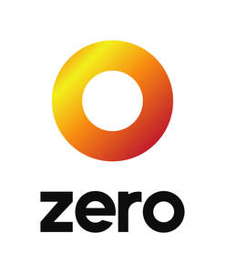

Trade Mark Journal No.2026/005 30 January 2026
UK00004295016 14 November 2025 (1,3,4,5,17,19,40,45)

- Class 1
- Adhesives used in industry; synthetic adhesives used in industry; carbon; synthetic carbon; activated carbon; carbon for filters; carbonic acid; carbonic hydrates; carbon tetrachloride; carbon for industrial purposes; carbon black for industrial purposes; ammonium carbonate; carbonates; synthetic carbonates; chemicals for use in industry; synthetic chemicals for use in industry; renewable chemicals for use in industry; chemicals for use in industry derived from petroleum products; hydrogen; synthetic hydrogen; hydrogen peroxide; synthetic hydrogen peroxide; hydrogen peroxide for industrial purposes; synthetic hydrogen peroxide for industrial purposes; plastics, unprocessed; synthetic plastics, unprocessed; artificial resins, unprocessed; synthetic artificial resins, unprocessed; isoalkane for industrial use; renewable isoalkane for industrial use; chemical substances for the production of naphtha and bionaphtha; fertilisers; bio-fertilisers; synthetic fertilisers; fertilisers [raw material]; chemical fertilisers; compound fertilisers; fertilising preparations; synthetic fertilising preparations; fertilisers for agricultural use; synthetic fertilisers for agricultural use; fertilisers for domestic use; synthetic fertilisers for domestic use; petrochemical products; synthetic petrochemical products; refrigerants; refrigerants [raw material]; synthetic refrigerants; chemicals for use in the production of synthetic rubber; solvents for paints, varnishes and lacquers; synthetic solvents for paints, varnishes and lacquers; solvents for industrial and commercial use; synthetic solvents for industrial and commercial use; degreasing solvents for use in manufacturing processes; synthetic degreasing solvents for use in manufacturing processes.
- Class 3
- Adhesives for cosmetic purposes; synthetic adhesives for cosmetic purposes; air fragrancing preparations; antiperspirants [toiletries]; astringents for cosmetic purposes; bleaching preparations and other substances for laundry use; body deodorant; body wash; body butter; body creams; body lotion; body gels; body cleansing foams; body cleaning and beauty care preparations; body oils; body spray; body moisturisers; body talcum powder; cosmetic body scrubs; conditioner; cosmetic creams; cosmetics; cosmetic oils; colognes; cleansing masks; dentifrices; disposable wipes impregnated with cleansing compounds for use on the face; depilatory preparations; depilatory wax; exfoliating scrubs for the face; eau de cologne; essential oils; eau de toilette; facial cleanser; facial scrub; facial wash; facial cream; facial moisturiser; fragrance refills for non-electric room fragrance dispensers; hair lotions; hair dyes/hair colorants; hair spray; hair lacquer; hair gel; hair wax; hair removal preparations and creams; hair care preparations; hand wash; hand lotion; hair and body wash; incense; incense sticks; incense spray; incense sachets; lip balm; lip cosmetics; make-up; make-up preparations; make-up removal preparations; moisturisers; moustache wax; nail cosmetics; perfumery; synthetic perfumery; room fragrances; room sprays; reed diffusers; shampoo; sunscreen preparations; shower gel; skincare preparations; spot sticks; shaving gel; shaving oil; shaving cream; shaving foam; scented water; scented room spray; scented oils; scented sachets; cleaning solvents, other than for use in manufacturing processes; synthetic cleaning solvents, other than for use in manufacturing processes; cleaning preparations with a solvent base; synthetic cleaning preparations with a solvent base; degreasing preparations with a solvent base; synthetic degreasing preparations with a solvent base; cleaning preparations; synthetic cleaning preparations; cleaning preparations for household purposes; synthetic cleaning preparations for household purposes; dry-cleaning preparations; oils for cleaning purposes; synthetic oils for cleaning purposes; chemical cleaning preparations for household purposes; synthetic chemical cleaning preparations for household purposes; cleaning, scouring and abrasive preparations; synthetic cleaning, scouring and abrasive preparations; cleaning fluids; cleaning foam.
- Class 4
- Candles; scented candles; coke; petroleum coke; synthetic petroleum coke; industrial oils and greases; synthetic industrial oils and greases; lubricants; synthetic lubricants; illuminants; fuel; biofuel; biodiesel fuel; decarbonised fuel; carbon-negative fuel; synthetic fuel; hydrocarbon fuel; synthetic hydrocarbon fuel; alkylate fuel; lighter fuel; butane lighter fuel; fuel gas; synthetic fuel gas; fuel gas for cooking, drying, lighting, heating and refrigerating; gas for personal care appliances; synthetic fuel gas for cooking, drying, lighting, heating and refrigerating; gas for personal care appliances; solidified gases [fuel]; synthetic solidified gases [fuel]; synthetic gas blended fuels; fuel produced from renewable feedstocks, namely, kerosene, naphtha and liquid propane gases; non-chemical additives for fuels; synthetic non-chemical additives for fuels; fuel oil; synthetic fuel oil; heating oil; synthetic heating oil; hardened oils [hydrogenated oils for industrial use]; synthetic hardened oils [hydrogenated oils for industrial use]; crude oil; synthetic crude oil; fuel from crude oil; fuel from synthetic crude oil; petroleum products derived from crude oil; petroleum products derived from synthetic crude oil; butane fuel; butane gas for use as fuel; butane gas for use as a household fuel; iso-butane; diesel oil; diesel fuel; biodiesel fuel; synthetic diesel fuel; gasoline; synthetic gasoline; kerosene; synthetic kerosene; liquified petroleum gases; synthetic liquified petroleum gases; hydrocarbon; synthetic hydrocarbon; hydrocarbon material created synthetically; liquified hydrocarbon gas; synthetic liquified hydrocarbon gas; liquefied natural gas; gas for domestic heating; gas oil for domestic heating; gas for industrial heating; gas oil for industrial heating; hydrocarbon gas liquids [HGL] for use as fuel; synthetic hydrocarbon gas liquids [HGL] for use as fuel; liquefied hydrocarbon gas [LHG] for use as fuel; synthetic liquefied hydrocarbon gas [LHG] for use as fuel; naphtha; bionaphtha; synthetic naphtha; petroleum, raw or refined; synthetic petroleum, raw or refined; petroleum products; synthetic petroleum products; propane; propane gas; propane for use as fuel; biopropane for use as fuel; iso-propane; iso-octane; paraffin; synthetic paraffin; paraffin wax; synthetic paraffin wax; wax [raw material]; synthetic wax [raw material].
- Class 5
- Pharmaceutical, medical and veterinary preparations; sanitary preparations for medical purposes; dental wax; disinfectants; preparations for destroying vermin; fungicides; herbicides; pesticides; synthetic pesticides; pesticides [raw material]; synthetic pesticides [raw material]; pesticides for agricultural purposes; synthetic pesticides for agricultural purposes; pesticides for horticultural purposes; synthetic pesticides for horticultural purposes; pesticides for industrial purposes; synthetic pesticides for industrial purposes.
- Class 17
- Plastics in extruded form for use in manufacture; synthetic plastics in extruded form for use in manufacture; plastic substances, semi-processed; synthetic plastic substances; plastic fibers, other than for textile use; synthetic plastic fibers, other than for textile use; semi-processed plastics; synthetic semi-processed plastics; unprocessed and semi-processed rubber and substitutes for rubber; unprocessed and semi-processed synthetic rubber and substitutes for synthetic rubber; resins in extruded form for use in manufacture; synthetic resins in extruded form for use in manufacture; packing, stopping and insulating materials; rubber; synthetic rubber.
- Class 19
- Materials, not of metal, for building and construction; building materials of plastics; building materials of synthetic plastics; asphalt, tar, pitch, bitumen; synthetic asphalt, synthetic tar, synthetic pitch, synthetic bitumen.
- Class 40
- Fuel processing; fuel refining; petroleum refining; fuel treatment services; petroleum products treatment services; synthetic petroleum products treatment services; synthetic fuel processing; synthetic fuel refining; synthetic fuel treatment services; processing of fuel materials; processing of synthetic fuel materials; processing of petroleum products; processing of synthetic petroleum products; production and processing of fuels and of other sources of energy; production and processing of synthetic fuels; production and processing of biofuels; production and processing of decarbonised fuel; processing of oil; processing of synthetic oil; processing of chemicals and petrochemicals; processing of synthetic chemicals and petrochemicals; processing of gas; treatment and processing of raw materials; treatment and processing of rubber; treatment and processing of synthetic rubber; treatment and processing of plastics; treatment and processing of synthetic plastics; recycling of plastics; liquefaction of petroleum gas; advice, consultancy and information relating to all of the aforesaid services.
- Class 45
- Licensing; licensing of intellectual property; licensing of trade marks; licensing of industrial property rights; licensing of patents and patent applications; licensing of research and development; licensing of technology; licensing of franchising concepts; granting of licences for franchise concepts; advice, consultancy and information relating to all of the aforesaid services.
Zero Petroleum Limited
Representative: Briffa